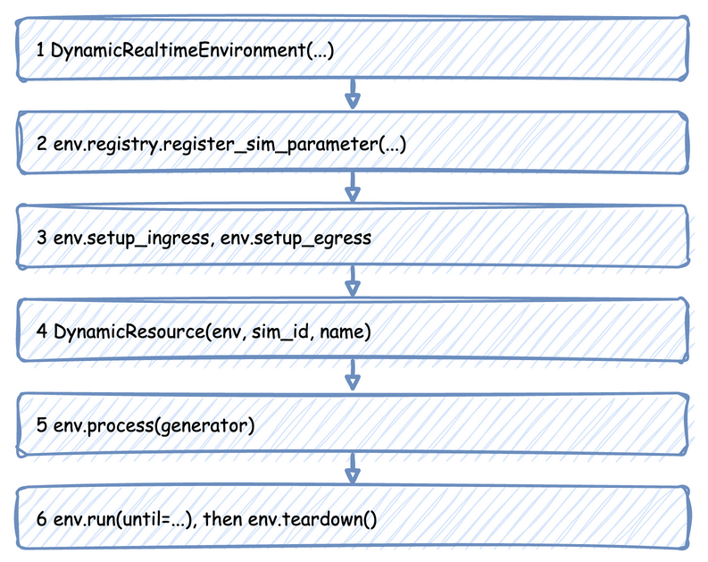

Low-level API
The low-level API is DynamicRealtimeEnvironment used directly, with SimPy processes you write yourself. A script registers the parameters, attaches the connectors, creates the resources and starts its processes with env.process. The builder API does each of these steps inside run(), so this page is also a description of what the builder does for you. First Simulation builds a first shop this way, in its Low-level tabs.
Use the low-level API when you need what the builder does not do:
- Several resources at once, or a handover from one to another, as in Multi-Resource Handoffs.
- Resources created while the simulation runs, as in Dynamic Topology.
- Containers and stores used by the processes: the builder registers a container's capacity but does not create it, and has no stores at all.
- Events of your own shape, rather than the
queued,startedand finished events of@app.task.
Steps of a Run
A low-level script takes these steps, in this order. The sections below take them one at a time, with the code of one complete script: a packing team with a stock of boxes and a store for packed orders. The whole script is at the end of the page.

Create the Environment
import numpy as np
from desflow import (
CapacityConfig,
ConsoleEgress,
DistributionConfig,
DynamicContainer,
DynamicRealtimeEnvironment,
DynamicResource,
DynamicStore,
Sampler,
SimParameter,
time_to_seconds,
)
env = DynamicRealtimeEnvironment(factor=0.0) # unpaced; 1.0 follows the wall clock
factor sets the pacing: 1.0 follows the wall clock, 0.0 runs as fast as possible. logical_start_time sets the date and time that simulation time 0 maps to, and go_live_at switches an unpaced run to real time partway through. Time and Pacing explains all three.
Register the Parameters
env.registry.register_sim_parameter(
SimParameter(
sim_id="Shop",
arrival={"orders": DistributionConfig(dist="exponential", rate=0.5)},
service={"packing": DistributionConfig(dist="normal", mean=1.5, std=0.3)},
resources={"packers": CapacityConfig(current_cap=1, max_cap=3)},
containers={"boxes": CapacityConfig(current_cap=100.0, max_cap=100.0)},
stores={"finished": CapacityConfig(current_cap=50, max_cap=50)},
variables={"boxes_per_order": 1.0},
)
)
One SimParameter holds every parameter of one simulation under its sim_id. Registering it gives each value a path, such as Shop.arrival.orders.rate or Shop.resources.packers.current_cap, and only the registered paths exist: a resource or a process that asks for any other raises KeyError. Stores can only be registered here; the builder has no way to declare them. Live Parameters lists every path.
Attach the Connectors
env.setup_egress([ConsoleEgress()]) # starts the egress thread
# env.setup_ingress([KafkaIngress(...)]) would start the ingress thread
setup_egress starts the egress thread, which writes every record the processes publish; without it, publish_event and publish_telemetry do nothing. setup_ingress starts the ingress thread, which applies parameter changes from Kafka, Redis or PostgreSQL. Connectors shows each one, and Batching and Delivery the arguments of setup_egress.
Create Resources, Containers and Stores
packers = DynamicResource(env, "Shop", "packers") # reads Shop.resources.packers.*
boxes = DynamicContainer(env, "Shop", "boxes", init=100.0)
finished = DynamicStore(env, "Shop", "finished")
sampler = Sampler(rng=np.random.default_rng(42)) # one seeded generator for every draw
Each reads its capacity from the registry when it is created, so the parameters must be registered first. A resource then follows current_cap while the simulation runs, as Resources explains. The Sampler holds the one random generator every draw comes from; seeding it makes a run repeat exactly.
Write the Processes
A process is a SimPy generator: it yields to wait, and publishes records as it goes. This one is what @app.task does in the builder, plus a stock of boxes and a store:
def order(env, order_id):
"""One order: queue for a packer, take a box, pack, then store the result."""
key, path_id = f"task-{order_id}", "Shop.service.packing"
env.publish_event(key, {"path_id": path_id, "status": "queued"})
with packers.request() as request:
yield request
env.publish_event(key, {"path_id": path_id, "status": "started"})
count = env.registry.get("Shop.variables.boxes_per_order").value
yield boxes.get(count) # waits if the stock is too low
yield env.timeout(sampler.sample(env.registry.get_config(path_id)))
yield finished.put({"order_id": order_id})
env.publish_event(key, {"status": "finished", "order_id": order_id})
The time is drawn after a packer is acquired, from the configuration the registry holds at that moment, so a change made while the order waited in the queue still applies to it.
The arrival loop keeps the configuration object rather than a copy of the rate. The registry updates that object in place, so the next draw uses the new rate:
def arrivals(env):
gap = env.registry.get_config("Shop.arrival.orders") # the live config object
order_id = 0
while True:
yield env.timeout(sampler.sample(gap)) # each draw reads the current rate
env.process(order(env, order_id))
order_id += 1
Telemetry is a process that publishes at an interval. publish_telemetry uses the path exactly as given; the builder's context.publish adds the sim_id in front:
def telemetry(env):
while True:
env.publish_telemetry("Shop.packers.in_use", packers.in_use)
env.publish_telemetry("Shop.boxes.level", boxes.level)
yield env.timeout(10.0)
A process can also change the simulation itself, through the registry, as a connector or a scenario would:
def refill_and_rush(env):
"""Refills boxes every minute, and doubles arrivals after five minutes."""
while True:
yield env.timeout(60.0)
missing = boxes.capacity - boxes.level
if missing > 0: # SimPy refuses a put of 0
yield boxes.put(missing)
if env.now >= 300 and env.registry.get("Shop.arrival.orders.rate").value < 1.0:
env.registry.update("Shop.arrival.orders.rate", 1.0)
env.registry.update("Shop.resources.packers.current_cap", 2)
Start the Processes and Run
env.process(arrivals(env))
env.process(telemetry(env))
env.process(refill_and_rush(env))
try:
env.run(until=time_to_seconds("10 min")) # until is in simulation seconds
finally:
env.teardown() # flushes the buffers and stops the threads
env.run is SimPy's, so until is a number of simulation seconds; time_to_seconds converts a duration such as "10 min". Without until, SimPy runs until no events remain, which for a model with an arrival loop is never. teardown in finally flushes the last records and stops both threads, even when the run stops with Ctrl+C or an error.
What the Builder Adds
SimulationContext.run() takes the same steps, and adds these:
- A seeded sampler. The builder creates
Sampler(rng=np.random.default_rng(random_seed)). A low-level script creates its own. ASamplerwith norngdraws nothing at random: it returns the mean of each distribution, or1 / ratefor an exponential one, every time. - One resource per
add_resource. The builder creates aDynamicResourcefor each, andcontext.get_resource(name)returns it. - Task lifecycle events.
@app.taskpublishesqueuedandstartedevents and samples the service time. A low-level process publishes its own events withenv.publish_event(key, value). - Metric names with the
sim_id.context.publish(name, value)prefixes the name with thesim_id.env.publish_telemetry(path_id, value)publishes the path exactly as given.
publish_event and publish_telemetry do nothing when no egress is attached, so a script without setup_egress runs without error and publishes nothing.
Full Script
The complete file, which the documentation tests run:
"""A complete low-level simulation, as the Low-level API page explains it step by step.
One packing team with a stock of boxes and a store of packed orders. tests/unit runs this
file unpaced, so every call on the page is checked.
"""
import numpy as np
from desflow import (
CapacityConfig,
ConsoleEgress,
DistributionConfig,
DynamicContainer,
DynamicRealtimeEnvironment,
DynamicResource,
DynamicStore,
Sampler,
SimParameter,
time_to_seconds,
)
env = DynamicRealtimeEnvironment(factor=0.0) # unpaced; 1.0 follows the wall clock
env.registry.register_sim_parameter(
SimParameter(
sim_id="Shop",
arrival={"orders": DistributionConfig(dist="exponential", rate=0.5)},
service={"packing": DistributionConfig(dist="normal", mean=1.5, std=0.3)},
resources={"packers": CapacityConfig(current_cap=1, max_cap=3)},
containers={"boxes": CapacityConfig(current_cap=100.0, max_cap=100.0)},
stores={"finished": CapacityConfig(current_cap=50, max_cap=50)},
variables={"boxes_per_order": 1.0},
)
)
env.setup_egress([ConsoleEgress()]) # starts the egress thread
# env.setup_ingress([KafkaIngress(...)]) would start the ingress thread
packers = DynamicResource(env, "Shop", "packers") # reads Shop.resources.packers.*
boxes = DynamicContainer(env, "Shop", "boxes", init=100.0)
finished = DynamicStore(env, "Shop", "finished")
sampler = Sampler(rng=np.random.default_rng(42)) # one seeded generator for every draw
def order(env, order_id):
"""One order: queue for a packer, take a box, pack, then store the result."""
key, path_id = f"task-{order_id}", "Shop.service.packing"
env.publish_event(key, {"path_id": path_id, "status": "queued"})
with packers.request() as request:
yield request
env.publish_event(key, {"path_id": path_id, "status": "started"})
count = env.registry.get("Shop.variables.boxes_per_order").value
yield boxes.get(count) # waits if the stock is too low
yield env.timeout(sampler.sample(env.registry.get_config(path_id)))
yield finished.put({"order_id": order_id})
env.publish_event(key, {"status": "finished", "order_id": order_id})
def arrivals(env):
gap = env.registry.get_config("Shop.arrival.orders") # the live config object
order_id = 0
while True:
yield env.timeout(sampler.sample(gap)) # each draw reads the current rate
env.process(order(env, order_id))
order_id += 1
def telemetry(env):
while True:
env.publish_telemetry("Shop.packers.in_use", packers.in_use)
env.publish_telemetry("Shop.boxes.level", boxes.level)
yield env.timeout(10.0)
def refill_and_rush(env):
"""Refills boxes every minute, and doubles arrivals after five minutes."""
while True:
yield env.timeout(60.0)
missing = boxes.capacity - boxes.level
if missing > 0: # SimPy refuses a put of 0
yield boxes.put(missing)
if env.now >= 300 and env.registry.get("Shop.arrival.orders.rate").value < 1.0:
env.registry.update("Shop.arrival.orders.rate", 1.0)
env.registry.update("Shop.resources.packers.current_cap", 2)
env.process(arrivals(env))
env.process(telemetry(env))
env.process(refill_and_rush(env))
if __name__ == "__main__":
try:
env.run(until=time_to_seconds("10 min")) # until is in simulation seconds
finally:
env.teardown() # flushes the buffers and stops the threads
assert (
packers.capacity == 2
and env.registry.get("Shop.arrival.orders.rate").value == 1.0
)
assert len(finished.items) > 0